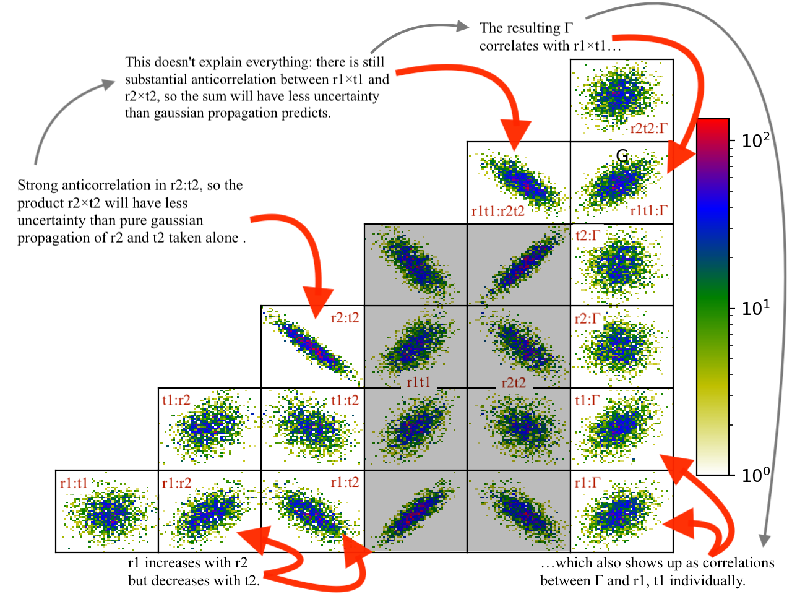

Fitting¶
Obtaining a good fit depends foremost on having the correct model to fit.
For example, if you are modeling a curve with spline, you will overfit the data if you have too many spline points, or underfit it if you do not have enough. If the underlying data is ultimately an exponential, then the spline order required to model it will require many more parameters than the corresponding exponential.
Even with the correct model, there are systematic errors to address (see Data Representation). A distorted sample can lead to broader resolution than expected for the measurement technique, and you will need to adjust your resolution function. Imprecise instrument control will lead to uncertainty in the position of the sample, and corresponding changes to the measured values. For high precision experiments, your models will need to incorporate these instrument effects so that the uncertainty in instrument configuration can be properly accounted for in the uncertainty in the fitted parameter values.
Quick Fit¶
While generating an appropriate model, you will want to perform a number
of quick fits. The Nelder-Mead Simplex works well for this. You will want
to run enough iterations --steps=1000 so the algorithm has a
chance to converge. Restarting a number of times --starts=10 gives
a reasonably thorough search of the fit space. Once the fit converges,
additional starts are very quick. From the graphical user interface, using
--starts=1 and clicking the fit button to improve the fit as needed works
pretty well. From the command line interface, the command line will be
something like:
bumps --fit=amoeba --steps=1000 --starts=20 --parallel model.py --store=T1
Here, the results are kept in a directory --store=T1 relative to the current
directory, with files containing the current model in model.py, the fit
result in model.par and a plots in model-*.png. The parallel option
indicates that multiple cores should be used on the cpu when running the fit.
The fit may be able to be improved by using the current best fit value as the starting point for a new fit:
bumps --fit=amoeba --steps=1000 --starts=20 --parallel model.py --store=T1 --pars=T1/model.par
If the fit is well behaved, and a numerical derivative exists, then switching to Quasi-Newton BFGS is useful, in that it will very rapidly converge to a nearby local minimum.
bumps --fit=newton model.py --pars=T1/model.par --store=T1
Differential Evolution is an alternative to Nelder-Mead Simplex, perhaps a little
more likely to find the global minimum but somewhat slower. This is a
population based algorithms in which several points from the current
population are selected, and based on the position and value, a new point
is generated. The population is specified as a multiplier on the number
of parameters in the model, so for example an 8 parameter model with
DE’s default population --pop=10 would create 80 points each generation.
This algorithms can be called from the command line as follows:
bumps --fit=de --steps=3000 --parallel model.py --store=T1
Some fitters save the complete state of the fitter on termination so that
the fit can be resumed. Use --resume=path/to/previous/store to resume.
The resumed fit also needs a --store=path/to/store, which could be the
same as the resume path if you want to update it, or it could be a completely
new path.
See Optimizer Selection for a description of the available optimizers, and Bumps Options for a description of all the bumps options.
Uncertainty Analysis¶
More important than the optimal value of the parameters is an estimate of the uncertainty in those values. The best fit is an accident of the measurement; perform the measurement again and you will get a different optimum. Given the uncertainty in the measurement, there is a joint distribution of parameter values that are consistent with the measurement. For example, when fitting a line, the choice of slope will affect the range of intercepts that fit the data. The goal of uncertainty analysis is to determine this distribution and summarize it for the reader.
By casting our problem as the likelihood of seeing the data given the model, we not only give ourselves the ability to incorporate prior information into the fit systematically, but we also give ourselves a strong foundation for assessing the uncertainty of the parameters.
There are multiple ways to perform the analysis:
Bayesian inference. Given the probability on the parameters and the probability that the measured data will be seen with those parameters, infer the probability of the parameters given the measured data. This is the primary method in Bumps and will be discussed at length below.
Sensitivity analysis. Given the best fit parameter values, look at the curvature around that point as a normal distribution with covariance computed from the Hessian matrix. Further, pretend that there is no interaction between the parameters (that is they are uncorrelated and independent), and report the uncertainty as the square root of the diagonal. This is the default method for most optimizers in Bumps.
Uncertainty contour. Assuming the measurement data is independent and normally distributed, a given increase in \(\chi^2\) above the minimum corresponds to 1-$sigma$ confidence interval. By following this contour you can find the set of all points \(\xi\) such that \(\chi^2(\xi) = \chi^2(x) + C\) where \(x\) is the point of maximum likelihood. Look in Numerical Recipes chapter on nonlinear least squares for a more complete discussion. Bumps does not include algorithms for this kind of analysis.
Forward Monte Carlo. Bumps has the option --resynth to perform a forward Monte Carlo estimate of the maximum likelihood. That is, you can use the measurement uncertainty to “rerun” the experiment, synthesizing a new dataset with the same uncertainty but slightly different values, then find the new maximum likelihood. After \(n\) runs you will be able to estimate the uncertainty in the best fit parameters. This method can be applied with any of the optimizers.
Repeated measurement. A direct way to estimate the parameter uncertainty is to repeat the experiment many times and look at the distribution of best fit results. This is the classic approach which you need to follow if you don’t know anything about the uncertainty in your measurement processes (other than the assumption of independence between measurements). You can use this during experimental design, simulating the experiment in different conditions to figure out the best strategy to retrieve the quantity of interest. For example, to plan a reflectometry experiment you want to know if it would be better to measure with a pair of contrast agents, or to spend twice as long on a single contrast. The result gives the expected uncertainty in the parameters before the measurement is ever performed. You might call this model driven forward Monte Carlo as opposed to the data driven forward MC listed above.
Bayesian inference is performed using DREAM. This is a Markov chain Monte Carlo (MCMC) method with a differential evolution step generator. Like simulated annealing, the MCMC explores the space using a random walk, always accepting a better point, but sometimes accepting a worse point depending on how much worse it is.
DREAM can be started with a variety of initial populations. The
random population --init=random distributes the initial points using
a uniform distribution across the space of the parameters. Latin
hypersquares --init=lhs improves on random by making sure that
there is on value for each subrange of every variable. The covariance
population --init=cov selects points from the uncertainty ellipse
computed from the derivative at the initial point. This method
will fail if the fitting parameters are highly correlated and the
covariance matrix is singular. The $epsilon$-ball population --init=eps
starts DREAM from a tiny region near the initial point and lets it
expand from there. It can be useful to start with an epsilon ball
from the previous best point when DREAM fails to converge using
a more diverse initial population.
The Markov chain will take time to converge on a stable population. This burn in time needs to be specified at the start of the analysis. After burn, DREAM will collect all points visited for N iterations of the algorithm. If the burn time was long enough, the resulting points can be used to estimate uncertainty on parameters.
A common command line for running DREAM is:
bumps --fit=dream --burn=1000 --samples=1e5 --init=cov --parallel --pars=T1/model.par model.py --store=T2
Bayesian uncertainty analysis is described in the GUM Supplement 1,[8] and is a valid technique for reporting parameter uncertainties in NIST publications. Given sufficient burn time, points in the search space will be visited with probability proportional to the goodness of fit. The file T1/model.err contains a table showing for each parameter the mean(std), median and best values, and the 68% and 95% credible intervals. The mean and standard deviation are computed from all the samples in the returned distribution. These statistics are not robust: if the Markov process has not yet converged, then outliers will significantly distort the reported values. Standard deviation is reported in compact notation, with the two digits in parentheses representing uncertainty in the last two digits of the mean. Thus, for example, \(24.9(28)\) is \(24.9 \pm 2.8\). Median is the best value in the distribution. Best is the best value ever seen. The 68% and 95% intervals are the shortest intervals that contain 68% and 95% of the points respectively. In order to report 2 digits of precision on the 95% interval, approximately 1000000 samples drawn from the distribution are required, or steps = 1000000/(#parameters #pop). The 68% interval will require fewer draws, though how many has not yet been determined.

Histogramming the set of points visited will gives a picture of the probability density function for each parameter. This histogram is generated automatically and saved in T1/model-var.png. The histogram range represents the 95% credible interval, and the shaded region represents the 68% credible interval. The green line shows the highest probability observed given that the parameter value is restricted to that bin of the histogram. With enough samples, this will correspond to the maximum likelihood value of the function given that one parameter is restricted to that bin. In practice, the analysis has converged when the green line follows the general shape of the histogram.

The correlation plots show that the parameters are not uniquely determined from the data. For example, the thickness of lamellae 3 and 4 are strongly anti-correlated, yielding a 95% CI of about 1 nm for each compared to the bulk nafion thickness CI of 0.2 nm. Summing lamellae thickness in the sampled points, we see the overall lamellae thickness has a CI of about 0.3 nm. The correlation plot is saved in T1/model-corr.png.

To assure ourselves that the uncertainties produced by DREAM do indeed correspond to the underlying uncertainty in the model, we perform a Monte Carlo forward uncertainty analysis by selecting 50 samples from the computed posterior distribution, computing the corresponding theory function and calculating the normalized residuals. Assuming that our measurement uncertainties are approximately normally distributed, approximately 68% of the normalized residuals should be within +/- 1 of the residual for the best model, and 98% should be within +/- 2. Note that our best fit does not capture all the details of the data, and the underlying systematic bias is not included in the uncertainty estimates.
Plotting the profiles generated from the above sampling method, aligning them such that the cross correlation with the best profile is maximized, we see that the precise details of the lamellae are uncertain but the total thickness of the lamellae structure is well determined. Bayesian analysis can also be used to determine relative likelihood of different number of layers, but we have not yet performed this analysis. This plot is stored in T1/model-errors.png.
The trace plot, T1/model-trace.png, shows the mixing properties of the first fitting parameter. If the Markov process is well behaved, the trace plot will show a lot of mixing. If it is ill behaved, and each chain is stuck in its own separate local minimum, then distinct lines will be visible in this plot.
The convergence plot, T1/model-logp.png, shows the log likelihood values for each member of the population. When the Markov process has converged, this plot will be flat with no distinct lines visible. If it shows a general upward sweep, then the burn time was not sufficient, and the analysis should be restarted. The ability to continue to burn from the current population is not yet implemented.
Just because all the plots are well behaved does not mean that the Markov process has converged on the best result. It is practically impossible to rule out a deep minimum with a narrow acceptance region in an otherwise unpromising part of the search space.
In order to assess the DREAM algorithm for suitability for our problem space we did a number of tests. Given that our fit surface is multimodal, we need to know that the uncertainty analysis can return multiple modes. Because the fit problems may also be ill-conditioned, with strong correlations or anti-correlations between some parameters, the uncertainty analysis needs to be able to correctly indicate that the correlations exist. Simple Metropolis-Hastings sampling does not work well in these conditions, but we found that DREAM is able to handle them. We are still affected by the curse of dimensionality. For correlated parameters in high dimensional spaces, even DREAM has difficulty taking steps which lead to improved likelihood. For example, we can recover an eight point spline with generous ranges on its 14 free parameters close to 100% of the time, but a 10 point spline is rarely recovered.
Using the posterior distribution¶
You can load the DREAM output population an perform uncertainty analysis operations after the fact. To run an interactive bumps session use the following:
bumps -i
First you need to import some functions:
import os
import matplotlib.pyplot as plt
from bumps.dream.state import load_state
from bumps.dream.views import plot_corrmatrix
from bumps.dream.stats import var_stats, format_vars
from bumps.dream.varplot import plot_vars
Then you need to reload the MCMC chains:
store = "/tmp/t1" # path to the --store=/tmp/t1 directory
modelname = "model" # model file name without .py extension
# Reload the MCMC data
basename = os.path.join(store, modelname)
state = load_state(basename)
state.mark_outliers() # ignore outlier chains
# Attach the labels from the .par file:
with open(basename+".par") as fid:
state.labels = [" ".join(line.strip().split()[:-1]) for line in fid]
Now you can plot the data:
state.show() # Create the standard plots
You can choose to plot only some of the variables:
# Select the data to plot (the 3rd and the last two in this case):
draw = state.draw(vars=[2, -2, -1])
# Histograms
stats = var_stats(draw) # Compute statistics such as the 90% interval
print(format_vars(stats))
plt.figure()
plot_vars(draw, stats)
# Correlation plots
plt.figure()
plot_corrmatrix(draw)
You can restrict those variables to a certain range. For example, to restrict the third parameter to \([0.8,1.0]\) and the last to \([0.2,0.4]\):
from bumps.dream import views
selection={2: (0.8,1.0), -1:(0.2,0.4),...}
draw = state.draw(vars=[2, -2, -1], selection=selection)
...
You can add create derived variables using a function to generate the new variable from some combination of existing variables. For example, to add the first two variables together to create the derived variable “x+y” use:
state.derive_vars(lambda p: p[0]+p[1], labels=["x+y"])
You can generate multiple derived parameters at a time with a function that returns a sequence:
state.derive_vars(lambda p: (p[0]*p[1],p[0]-p[1]), labels=["x*y","x-y"])
These new parameters will show up in the plots:
state.show()
Here is an example from a fit to bovine serum albumin with a two layer model. The parameter of interest ($Gamma$) is derived from the SLD \(\rho\) and thickness \(t\) of the constituent layers using \(\Gamma = 0.06955(\rho_1 t_1 + \rho_2 t_2)\). Using intermediate values for \(\rho_1 t_1\) and \(\rho_2 t_2\) to show the difference between gaussian error propagation and full correlation analysis, the derived parameters as set up as follows:
from bumps.dream.state import load_state
state = load_state("1000ppm_Ph4.9 NRW_0M_2layer model")
state.labels = ["r1", "t1", "r2", "t2"]
state.derive_vars(lambda p: (p[0]*p[1],p[2]*p[3],0.06955*(p[0]*p[1]+p[2]*p[3])),
labels=["r1t1","r2t2","G"])
state.show()
This gives the following output:
Parameter mean median best [ 68% interval] [ 95% interval]
1 r1 0.3321(98) 0.3322 0.3327 [ 0.322 0.342] [ 0.312 0.351]
2 t1 50.37(89) 50.381 50.286 [ 49.47 51.21] [ 48.49 52.21]
3 r2 1.199(22) 1.1976 1.1980 [ 1.177 1.224] [ 1.158 1.242]
4 t2 24.90(80) 24.892 24.901 [ 24.06 25.76] [ 23.37 26.44]
5 r1t1 16.73(58) 16.712 16.729 [ 16.16 17.30] [ 15.61 17.86]
6 r2t2 29.84(48) 29.863 29.832 [ 29.36 30.33] [ 28.87 30.78]
7 G 3.239(27) 3.238 3.238 [ 3.21 3.27] [ 3.19 3.29]
Using simple gaussian propagation of errors (from the wonderfully convenient uncertainties package) can compare the computed uncertainties:
from uncertainties import ufloat as U
C = 0.06955
r1t1 = U(0.3321, 0.0098) * U(50.37, 0.89)
r2t2 = U(1.199, 0.022) * U(24.90, 0.80)
G = C*(r1t1 + r2t2)
print("r1*t1 =", r1t1)
print("r2*t2 =", r2t2)
print("G =", C*(r1t1 + r2t2))
which produces:
r1*t1 = 16.7 ± 0.6 # same as forward MC
r2*t2 = 29.9 ± 1.1 # compared to 29.8 ± 0.5 from forward MC
G = 3.24 ± 0.09 # compared to 3.24 ± 0.03 from forward MC
That is, the gaussian approximation assuming uncorrelated uncertainties is 3x larger than the forward Monte Carlo approximation from the joint distribution of the fitted parameters. Much of the reduction comes from the strong negative correlation between \(\rho_2\) and \(t_2\), with the remainder coming from the negative correlation between the products \(\rho_1 t_1\) and \(\rho_2 t_2\).
You can see this in the correlation plots, with r2:t2 having a very narrow diagonal (hence strong correlation) and r1t1:r2×t2 having a somewhat wider diagonal (hence weaker correlation).
{kind=link}
The plotting code is somewhat complicated, and matplotlib doesn’t have a good way of changing plots interactively. If you are running directly from the source tree, you can modify the dream plotting libraries as you need for a one-off plot, then replot the graph:
# ... change the plotting code in dream.views/dream.corrplot
reload(dream.views)
reload(dream.corrplot)
state.show()
Be sure to restore the original versions when you are done. If the change is so good that everyone should use it, be sure to feed it back to the community via the bumps source control system at github.
Publication Graphics¶
The matplotlib package is capable of producing publication quality graphics for your models and fit results, but it requires you to write scripts to get the control that you need. These scripts can be run from the Bumps application by first loading the model and the fit results then accessing their data directly to produce the plots that you need.
The model file (call it plot.py) will start with the following:
import sys
from bumps.cli import load_problem, load_best
model, store = sys.argv[1:3]
problem = load_problem([model])
load_best(problem, os.path.join(store, model[:-3]+".par"))
chisq = problem.chisq
print("chisq", chisq)
Assuming your model script is in model.py and you have run a fit with
--store=X5, you can run this file using:
$ bumps plot.py model.py X5
Now model.py is loaded and the best fit parameters are set.
To produce plots, you will need access to the data and the theory. This
can be complex depending on how many models you are fitting and how many
datasets there are per model. For single experiment models defined
by FitProblem, your original
experiment object is referenced by problem.fitness. For simultaneous
refinement defined by FitProblem with multiple Fitness objects,
use problem.models[k].fitness to access the experiment for
model k. Your experiment object should provide methods for retrieving
the data and plotting data vs. theory.
How does this work in practice? Consider the reflectivity modeling problem where we have a simple model such as nickel film on a silicon substrate. We measure the specular reflectivity as various angles and try to recover the film thickness. We want to make sure that our model fits the data within the uncertainty of our measurements, and we want some graphical representation of the uncertainty in our film of interest. The refl1d package provides tools for generating the sample profile uncertainty plots. We access the experiment information as follows:
experiment = problem.fitness
z,rho,irho = experiment.smooth_profile(dz=0.2)
# ... insert profile plotting code here ...
QR = experiment.reflectivity()
for p,th in self.parts(QR):
Q,dQ,R,dR,theory = p.Q, p.dQ, p.R, p.dR, th[1]
# ... insert reflectivity plotting code here ...
Next we can reload the the error sample data from the DREAM MCMC sequence:
import dream.state
from bumps.errplot import calc_errors_from_state, align_profiles
state = load_state(os.path.join(store, model[:-3]))
state.mark_outliers()
# ... insert correlation plots, etc. here ...
profiles,slabs,Q,residuals = calc_errors_from_state(problem, state)
aligned_profiles = align_profiles(profiles, slabs, 2.5)
# ... insert profile and residuals uncertainty plots here ...
The function bumps.errplot.calc_errors_from_state() calls the
calc_errors function defined by the reflectivity model. The return value is
arbitrary, but should be suitable for the show_errors function defined
by the reflectivity model.
Putting the pieces together, here is a skeleton for a specialized plotting script:
import sys
import pylab
from bumps.dream.state import load_state
from bumps.cli import load_problem, load_best
from bumps.errplot import calc_errors_from_state
from refl1d.align import align_profiles
model, store = sys.argv[1:3]
problem = load_problem([model])
load_best(problem, os.path.join(store, model[:-3]+".par"))
chisq = problem.chisq
experiment = problem.fitness
z,rho,irho = experiment.smooth_profile(dz=0.2)
# ... insert profile plotting code here ...
QR = experiment.reflectivity()
for p,th in self.parts(QR):
Q,dQ,R,dR,theory = p.Q, p.dQ, p.R, p.dR, th[1]
# ... insert reflectivity plotting code here ...
if 1: # Loading errors is expensive; may not want to do so all the time.
state = load_state(os.path.join(store, model[:-3]))
state.mark_outliers()
# ... insert correlation plots, etc. here ...
profiles,slabs,Q,residuals = calc_errors_from_state(problem, state)
aligned_profiles = align_profiles(profiles, slabs, 2.5)
# ... insert profile and residuals uncertainty plots here ...
pylab.show()
raise Exception() # We are just plotting; don't run the model
Tough Problems¶
Note
DREAM is currently our most robust fitting algorithm. We are exploring other algorithms such as parallel tempering, but they are not currently competitive with DREAM.
With the toughest fits, for example freeform models with arbitrary
control points, DREAM only succeeds if the model is small or the
control points are constrained. We have developed a parallel
tempering (fit=pt) extension to DREAM. Whereas DREAM runs with a
constant temperature, \(T=1\), parallel tempering runs with multiple
temperatures concurrently. The high temperature points are able to
walk up steep hills in the search space, possibly crossing over into a
neighbouring valley. The low temperature points agressively seek the
nearest local minimum, rejecting any proposed point that is worse than
the current. Differential evolution helps adapt the steps to the shape
of the search space, increasing the chances that the random step will be
a step in the right direction. The current implementation uses a fixed
set of temperatures defaulting to --Tmin=0.1 through --Tmax=10 in
--nT=25 steps; future versions should adapt the temperature based
on the fitting problem.
Parallel tempering is run like dream, but with optional temperature controls:
bumps --fit=dream --burn=1000 --samples=1e5 --init=cov --parallel --pars=T1/model.par model.py --store=T2
Parallel tempering does not yet generate the uncertainty plots provided by DREAM. The state is retained along the temperature for each point, but the code to generate histograms from points weighted by inverse temperature has not yet been written.
Parallel tempering performance has been disappointing. In theory it should be more robust than DREAM, but in practice, we are using a restricted version of differential evolution with the population defined by the current chain rather than a set of chains running in parallel. When the Markov chain has converged these populations should be equivalent, but apparently this optimization interferes with convergence. Time permitting, we will improve this algorithm and look for other ways to improve upon the robustness of DREAM.
Command Line¶
The GUI version of Bumps is slower because it frequently updates the graphs showing the best current fit.
Run multiple models overnight, starting one after the last is complete by creating a batch file (e.g., run.bat) with one line per model. Append the parameter –batch to the end of the command lines so the program doesn’t stop to show interactive graphs:
bumps model.py ... --parallel --batch
You can view the fitted results in the GUI the next morning using:
bumps --edit model.py --pars=T1/model.par